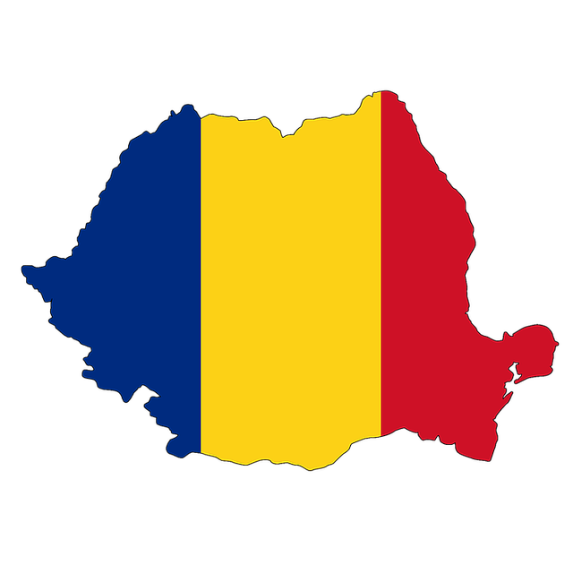

RUMANIA
(Tierra natal de mi abuelo Nico)

Rumania es un país ubicado en la intersección de Europa Central y del Sureste, en la frontera con el Mar Negro, limita con Hungría y Serbia al Oeste, Ucrania y Moldavia al Noreste y al este, y Bulgaria al Sur. Rumania es el noveno país más grande de la Unión Europa por área y cuenta con la séptima mayor población, con más de 20 millones de habitantes. Su capital y ciudad más poblada es Bucarest la décima ciudad más grande de la Unión Europea.
La Constitución actual de Rumania fue creada en 1991 y reformada en 2003. En ella se establece que el país es una república parlamentaria democrática y multipartidista. Se establece la elección popular de un presidente y un parlamento mediante votación de los ciudadanos mayores de 18 años, y la existencia de una corte constitucional y otra corte menor.
Con respecto a su economía, Rumania es uno de los principales productores y exportadores de productos agrícolas de Europa
La población de Rumanía alcanza los 21.848.000 habitantes (2006). La mayoría de la población pertenece a la etnia rumana (88,9 %), seguida por una importante colectividad de húngaros (6,6 %), concentrados sobre todo en la región de Transilvania, y de gitanos (2,5 %). Ucranianos (0,3 %), rusos, alemanes (0,3 %), turcos, búlgaros, italianos y serbios, junto con otras minorías, constituyen el resto de la población. Los habitantes se concentran en las llanuras, donde están los centros industriales y se desarrolla la agricultura a gran escala.
Rumania es un estado sin religión oficial, aunque más del 89 % de la población se adscribe a la Iglesia ortodoxa rumana (según el censo de 2002).
El rumano es el idioma oficial del país. Le siguen en importancia el húngaro y el romaní (que no tiene nada que ver con el rumano, sino con los romis, los gitanos rumanos), hablados por las poblaciones de esas etnias. El ucraniano es hablado en áreas de Maramures, Bucovina, Dobrucha y Banat.
Con respecto a la gastronomía, en la cocina rumana confluyen múltiples y dispares influencias modificadas en el curso de los siglos, es el reflejo de las manifestaciones de la vida de país en el que las culturas y tradiciones son muy diversas. La cocina rumana tiene sin duda origen balcánico, pero ha desarrollado características muy particulares debido a la marcada influencia de la cocina rusa y turca. También tiene especialmente influencia húngara y francesa, y se caracteriza por poseer una gran cantidad de variedad de productos derivados de la fertilidad de su tierra.
Los Judíos en Rumania
En Rumanía. la población judía es de alrededor de 14.000 individuos. La mayoría de estos son judíos asquenazíes. Sin embargo, también hay sefardíes, pero la mayoría de estos son gente de edad avanzad ya que los jóvenes se han asimilado. La organización que coordina las actividades de los judíos rumanos es 1a Federación de Comunidades Judías.
Historia
Los judíos se asentaron en esta región desde la Edad Media, específicamente en Moldavia y Transilvania. Llegaron tras la expulsión de España. La migración de los judíos ibéricos a los Balcanes fue favorecida por el sultán otomano Beyazid II, quien envió incluso buques de su Armada para transportar desde las costas españolas a numerosos judíos expulsados por los Reyes Católicos en 1492.
Los sefardíes, llegaron con su cultura y la establecieron, siendo el idioma hablado por ellos el ladino o judeoespañol, que se habló durante mucho tiempo en tierras de la actual Rumanía, sobre todo en las ciudades portuarias del Danubio y en la Dobruja Meridional. Sin embargo, empezaron a perder influencia a partir de finales del siglo XIX, cuando comenzaron a llegar a Valaquia y Moldavia oleadas de asquenazíes de lengua yiddish, huyendo de las persecuciones de que eran objeto en Rusia y Galitzia. Y desde entonces Moldavia se convirtió en el centro cultural de la vida judía.
Antisemitismo moderno
El antisemitismo ha sido una de las características de la historia moderna rumana y se reflejó en la vida social, económica e intelectual del país. Ya a mediados del siglo XX se había extendido la creencia de que los judíos formaban parte de una conspiración internacional que tenía por objetivo la destrucción del Estado rumano. Por lo tanto la clase gobernante impidieron la asimilación de los judíos a la sociedad bloqueando la concesión de derechos civiles.
La situación de la población judía rumana empeoró notablemente según el país fue estrechando sus lazos con Alemania en el verano de 1940. Se aprobaron leyes que impedían la participación de los judíos en la administración pública y los privó de sus derechos civiles y políticos.
También privaron a los judíos de sus propiedades, les expropiaron sus negocios. Se prohibían los matrimonios mixtos y la conversión de los judíos al cristianismo.
En 1940 se produjeron diversos pogromos en el sur de Bucovina y en el norte de Moldavia. Asesinaron y violaron a mujeres, y mataron cruelmente a niños. Muchísimos hogares de judíos fueron saqueados, sus tiendas incendiadas y numerosas sinagogas profanadas.
A raíz de los decretos antijudíos impuestos por los gobernantes, en la que excluían a los judíos de la sociedad, y el antisemitismo ya arraigado en la población, que se vio enaltecida tras los pogromos, la población se vio reducida y de los 756.930 judíos que residían en el país en 1930 quedaron 600.000. Principalmente a causa de la emigración (entre ellos mi abuelo Nico con sus padres y hermano menor).
De los seiscientos mil judíos que vivían en Rumanía en el otoño de 1940, solo alrededor de la mitad sobrevivieron a la guerra. De los deportados de Bucovina y Besarabia, al menos la mitad perecieron.
A la guerra sobrevivieron 350.000 judíos.
Cabe destacar que antes de la Segunda Guerra Mundial, la Comunidad Judía de Rumania constituía la cuarta comunidad judía más grande a nivel mundial tras la de Polonia, Rusia y la de Estados Unidos. Para que tengamos una idea de la que significaba o representaba esta comunidad.
La mayoría de los sobrevivientes huyeron luego de la Rumania comunista y emigraron a los Estados Unidos solamente unos 14.000 judíos, la mayoría mayores de 60 años, viven hoy en Rumania.
Hoy en día existen 86 sinagogas y 821 cementerios repartidos por toda Rumania. Y lamentablemente se ha vuelto una tarea heroica y casi imposible la conservación de estas.